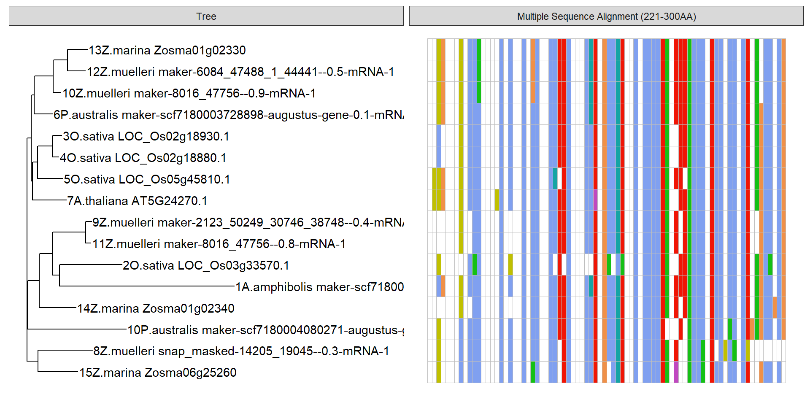
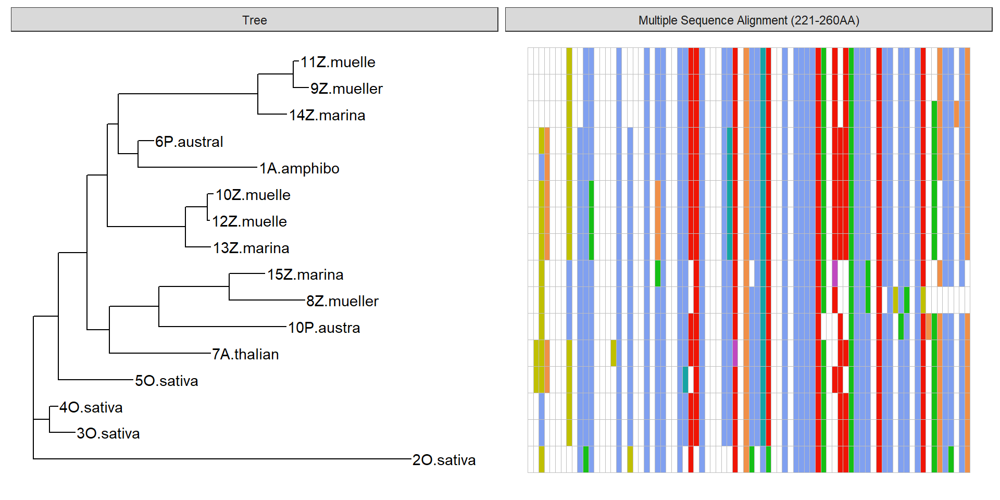
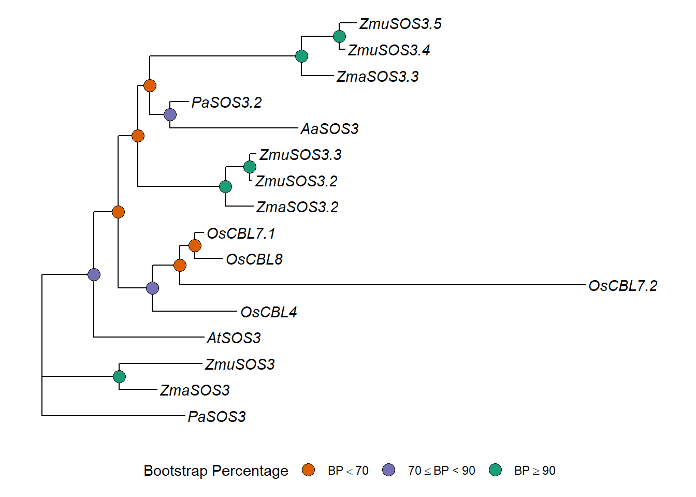

Last updated: 2022-03-11
Checks: 7 0
Knit directory: Amphibolis_Posidonia_Comparison/
This reproducible R Markdown analysis was created with workflowr (version 1.6.2). The Checks tab describes the reproducibility checks that were applied when the results were created. The Past versions tab lists the development history.
Great! Since the R Markdown file has been committed to the Git repository, you know the exact version of the code that produced these results.
Great job! The global environment was empty. Objects defined in the global environment can affect the analysis in your R Markdown file in unknown ways. For reproduciblity it’s best to always run the code in an empty environment.
The command set.seed(20210414) was run prior to running the code in the R Markdown file. Setting a seed ensures that any results that rely on randomness, e.g. subsampling or permutations, are reproducible.
Great job! Recording the operating system, R version, and package versions is critical for reproducibility.
Nice! There were no cached chunks for this analysis, so you can be confident that you successfully produced the results during this run.
Great job! Using relative paths to the files within your workflowr project makes it easier to run your code on other machines.
Great! You are using Git for version control. Tracking code development and connecting the code version to the results is critical for reproducibility.
The results in this page were generated with repository version 76a65cd. See the Past versions tab to see a history of the changes made to the R Markdown and HTML files.
Note that you need to be careful to ensure that all relevant files for the analysis have been committed to Git prior to generating the results (you can use wflow_publish or wflow_git_commit). workflowr only checks the R Markdown file, but you know if there are other scripts or data files that it depends on. Below is the status of the Git repository when the results were generated:
Ignored files:
Ignored: .Rhistory
Ignored: .Rproj.user/
Ignored: analysis/OTT.nb.html
Ignored: analysis/plotRgenes.nb.html
Untracked files:
Untracked: data/OG0000189.RiceAraSeagrasses.aln.fasta.raxml.reduced.phy
Untracked: output/patched_gene_loss_heatmaps.png
Unstaged changes:
Modified: output/SOS3_phylogeny.png
Modified: output/patched_gene_loss.png
Note that any generated files, e.g. HTML, png, CSS, etc., are not included in this status report because it is ok for generated content to have uncommitted changes.
These are the previous versions of the repository in which changes were made to the R Markdown (analysis/MSA.Rmd) and HTML (docs/MSA.html) files. If you’ve configured a remote Git repository (see ?wflow_git_remote), click on the hyperlinks in the table below to view the files as they were in that past version.
| File | Version | Author | Date | Message |
|---|---|---|---|---|
| Rmd | 76a65cd | Philipp Bayer | 2022-03-11 | finalised MSA! |
| html | a994174 | Philipp Bayer | 2022-03-10 | Build site. |
| Rmd | e57f6d8 | Philipp Bayer | 2022-03-10 | Fix one label! |
| Rmd | ebd08f5 | Philipp Bayer | 2022-03-10 | Add missing files |
| html | ebd08f5 | Philipp Bayer | 2022-03-10 | Add missing files |
| html | 8886b0e | Philipp Bayer | 2022-03-10 | Build site. |
| Rmd | 02708fd | Philipp Bayer | 2022-03-10 | New: fancy MSAs!! |
I found some interesting gene clusters. Let’s look at them
library(tidyverse)
library(ggmsa)
library(Biostrings)
library(ape)
library(ggtree)
library(treeio)
knitr::opts_knit$set(root.dir = rprojroot::find_rstudio_root_file())ggmsa('data/OG0000189.RiceAraSeagrasses.aln.fasta', start = 221, end = 260, char_width = 0.5, seq_name = T) + geom_seqlogo() + geom_msaBar()Coordinate system already present. Adding new coordinate system, which will replace the existing one.x <- readAAStringSet('data/OG0000189.RiceAraSeagrasses.aln.fasta')
d <- as.dist(stringDist(x, method = "hamming")/width(x)[1])
tree <- bionj(d)
p <- ggtree(tree) + geom_tiplab()
ggtree(tree) + geom_tiplab()data = tidy_msa('data/OG0000189.RiceAraSeagrasses.aln.fasta', 221, 260)
p + geom_facet(geom = geom_msa, data = data, panel = 'Multiple Sequence Alignment (221-260AA)',
font = NULL, color = "Chemistry_AA") +
xlim_tree(1)Warning: Unknown or uninitialised column: `name`.
Let’s use a RAXML made tree
Commands run, after I shortened protein IDs manually. I pulled out the rice/Arabidopsis/seagrass proteins manually from the OG0000189.fa Orthofinder produced, and shortened their names so they fit into Phylip format.
muscle -in OG0000189.RiceAraSeagrasses.fa -out OG0000189.RiceAraSeagrasses.phy -phyi
raxmlHPC -p12345 -m PROTGAMMAAUTO -s OG0000189.RiceAraSeagrasses.phy -n AUTO
treestring <- '((3O.sativa:0.11386470583955717040,4O.sativa:0.03615896391829190315):0.07379737996482453599,(5O.sativa:0.33751444720146173140,((7A.thalian:0.45696796911334131019,((8Z.mueller:0.33996861614583556710,15Z.marina:0.16088168380872580610):0.31923212677234219514,10P.austra:0.57486248434538900209):0.22324965676023655892):0.10039129162924786964,((13Z.marina:0.11346816437532522559,(12Z.muelle:0.00973855109814669891,10Z.muelle:0.02645894329604922546):0.09840311662577182206):0.35332170475064506032,((14Z.marina:0.12821969530885793387,(9Z.mueller:0.06883167458475099310,11Z.muelle:0.02355162378347611801):0.15839770535961147924):0.63099939044074537797,(1A.amphibo:0.53760770644490452064,6P.austral:0.07001018412366488697):0.08839123570898912985):0.05074368132159561007):0.09141392275039983417):0.12967268161775510893):0.11320488597472283532,2O.sativa:1.70657194075952300949):0.0;'
plot(ape::read.tree(text=treestring))p2 <- ggtree(ape::read.tree(text=treestring)) + geom_tiplab()That’s very different from the above dendrogram!
data2 <- data %>% mutate(name = str_sub(name, 1, 10),
name = str_trim(name))
p2 + geom_facet(geom = geom_msa, data = data2, panel = 'Multiple Sequence Alignment (221-260AA)',
font = NULL, color = "Chemistry_AA") +
xlim_tree(2)Warning: Unknown or uninitialised column: `name`.
Good! I used blastp with Swissprot to see whether I could get ‘official’ gene names for some of these, especially the O. sativa. I uploaded the fasta in data/OG000189.fa to blastp/swissprot, and pulled out new names where available.
Hits are to: A. thaliana Calcineurin B-like protein 4 (CBL4, Alternative name: SOS3) O. sativa Calcineurin B-like protein 8 (CBL8) O. sativa Calcineurin B-like protein 4 (CBL4)
Let’s rename the tree and the MSA data table using rename_taxa
trees <- ape::read.tree(text=treestring)
old_names <- trees$tip.label
# [1] "3O.sativa" "4O.sativa" "5O.sativa" "7A.thalian" "8Z.mueller" "15Z.marina" "10P.austra" "13Z.marina"
# [9] "12Z.muelle" "10Z.muelle" "14Z.marina" "9Z.mueller" "11Z.muelle" "1A.amphibo" "6P.austral" "2O.sativa"
new_names <- c( 'OsCBL8', 'OsCBL7.1', 'OsCBL4', 'AtSOS3', 'ZmuSOS3', 'ZmaSOS3', 'PaSOS3', 'ZmaSOS3.2', 'ZmuSOS3.2', 'ZmuSOS3.3', 'ZmaSOS3.2', 'ZmuSOS3.4', 'ZmuSOS3.5', 'AaSOS3', 'PaSOS3.2', 'OsCBL7.2')
rename_df <- data.frame(old = old_names, new = new_names)
rename_df old new
1 3O.sativa OsCBL8
2 4O.sativa OsCBL7.1
3 5O.sativa OsCBL4
4 7A.thalian AtSOS3
5 8Z.mueller ZmuSOS3
6 15Z.marina ZmaSOS3
7 10P.austra PaSOS3
8 13Z.marina ZmaSOS3.2
9 12Z.muelle ZmuSOS3.2
10 10Z.muelle ZmuSOS3.3
11 14Z.marina ZmaSOS3.2
12 9Z.mueller ZmuSOS3.4
13 11Z.muelle ZmuSOS3.5
14 1A.amphibo AaSOS3
15 6P.austral PaSOS3.2
16 2O.sativa OsCBL7.2trees <- rename_taxa(trees, rename_df, old, new)
p3 <- ggtree(trees) + geom_tiplab(fontface='italic')
p3#str_replace_all takes a named vector
replace_vector <- new_names
names(replace_vector) <- old_names
data2 <- data2 %>% mutate(name = str_replace_all(name, replace_vector))final_p <- p3 + geom_facet(geom = geom_msa, data = data2, panel = 'Multiple Sequence Alignment (221-260AA)',
font = NULL, color = "Chemistry_AA") +
xlim_tree(2)Warning: Unknown or uninitialised column: `name`.final_pcowplot::save_plot(final_p, filename = 'output/SOS3_phylogeny.png', base_width=10)“However, apparent photosynthesis is still maintained at a salinity 15% that of normal seawater and at temperatures of 3 and 30°C, consistent with the ecological role of Z. muelleri as an intertidal species.” https://www.sciencedirect.com/science/article/abs/pii/0304377085900634
Now let’s also add support values.
I ran this based on Using RAxML-NG in Practice
# to get best model
modeltest-ng -i OG0000189.RiceAraSeagrasses.aln.fasta -t ml -d aa -p 8
# to get fixed fasta
raxml-ng --msa OG0000189.RiceAraSeagrasses.aln.fasta --model JTT-DCMUT+G4 --check
# to make a regular tree
raxml-ng --msa OG0000189.RiceAraSeagrasses.aln.fasta.raxml.reduced.phy --model JTT-DCMUT+G4 --prefix T3 --threads 2 --seed 2
# make 200 bootstrap trees, does not converge
raxml-ng --msa OG0000189.RiceAraSeagrasses.aln.fasta.raxml.reduced.phy --model JTT-DCMUT+G4 --prefix T8 --threads 8 --seed 2 --bootstrap --bs-trees 200
# make another 400 with different seed
raxml-ng --msa OG0000189.RiceAraSeagrasses.aln.fasta.raxml.reduced.phy --model JTT-DCMUT+G4 --prefix T11 --threads 8 --seed 333 --bootstrap --bs-trees 400
# check whether they converge with <3% WRF cutoff
raxml-ng --bsconverge --bs-trees allbootstraps --prefix T12 --seed 2 --threads 1 --bs-cutoff 0.03
#yes, after 550 - close one!
# to make the final trees with bootstrap values
cat T8.raxml.bootstraps T11.raxml.bootstraps > allbootstraps
raxml-ng --support --tree T3.raxml.bestTree --bs-trees allbootstraps --prefix T13 --redonewtree <- '((((((12Z.muelleri_maker-6084_47488_1_44441--0.5-mRNA-1:0.009685,10Z.muelleri_maker-8016_47756--0.9-mRNA-1:0.026505)99:0.098293,13Z.marina_Zosma01g02330:0.113268)99:0.354433,(((11Z.muelleri_maker-8016_47756--0.8-mRNA-1:0.023273,9Z.muelleri_maker-2123_50249_30746_38748--0.4-mRNA-1:0.068317)99:0.153634,14Z.marina_Zosma01g02340:0.129762)100:0.616637,(1A.amphibolis_maker-scf7180000542070-augustus-gene-0.0-mRNA-1:0.518908,6P.australis_maker-scf7180003728898-augustus-gene-0.1-mRNA-1:0.074916)72:0.082830)22:0.047398)31:0.080205,((2O.sativa_LOC_Os03g33570.1:1.647537,(3O.sativa_LOC_Os02g18930.1:0.113637,4O.sativa_LOC_Os02g18880.1:0.035299)53:0.061341)66:0.111396,5O.sativa_LOC_Os05g45810.1:0.344545)75:0.137407)42:0.100482,7A.thaliana_AT5G24270.1:0.448151)83:0.209634,(15Z.marina_Zosma06g25260:0.152988,8Z.muelleri_snap_masked-14205_19045--0.3-mRNA-1:0.336420)100:0.314204,10P.australis_maker-scf7180004080271-augustus-gene-0.8-mRNA-1:0.580458)83:0.0;'
tree3 <- ape::read.tree(text=newtree, branch.label='support')
p3 <- ggtree(tree3) + geom_tiplab()
p3OK the nodes are now named differently due to raxml-ng, time to fix again
old_names <- tree3$tip.label
# [1] "3O.sativa" "4O.sativa" "5O.sativa" "7A.thalian" "8Z.mueller" "15Z.marina" "10P.austra" "13Z.marina"
# [9] "12Z.muelle" "10Z.muelle" "14Z.marina" "9Z.mueller" "11Z.muelle" "1A.amphibo" "6P.austral" "2O.sativa"
#new_names <- c( 'OsCBL8', 'OsCBL7.1', 'OsCBL4', 'AtSOS3', 'ZmuSOS3', 'ZmaSOS3', 'PaSOS3', 'ZmaSOS3.2',
# 'ZmuSOS3.2', 'ZmuSOS3.3', 'ZmaSOS3.3', 'ZmuSOS3.2', 'ZmuSOS3.4', 'AaSOS3', 'PaSOS3.2', 'OsCBL7.2')
new_names <- c('ZmuSOS3.2', 'ZmuSOS3.3', 'ZmaSOS3.2', 'ZmuSOS3.4', 'ZmuSOS3.5', 'ZmaSOS3.2','AaSOS3',
'PaSOS3.2', 'OsCBL7.2', 'OsCBL8', 'OsCBL7.1', 'OsCBL4', 'AtSOS3', 'ZmaSOS3', 'ZmuSOS3', 'PaSOS3')
rename_df <- data.frame(old = old_names, new = new_names)
tree3 <- rename_taxa(tree3, rename_df, old, new)
p3 <- ggtree(tree3) + geom_tiplab(fontface='italic')
p3 <- p3 + geom_nodelab(aes(subset=label>80))replace_vector <- new_names
names(replace_vector) <- old_names
data3 <- data2 %>% mutate(name = str_replace(name, ' ', '_'),
name = str_replace_all(name, replace_vector))
p3 + geom_facet(geom = geom_msa, data = data3, panel = 'Multiple Sequence Alignment (221-260AA)',
font = NULL, color = "Chemistry_AA") +
xlim_tree(3)Warning: Unknown or uninitialised column: `name`.
sessionInfo()R version 4.1.0 (2021-05-18)
Platform: x86_64-w64-mingw32/x64 (64-bit)
Running under: Windows 10 x64 (build 19042)
Matrix products: default
locale:
[1] LC_COLLATE=English_Australia.1252 LC_CTYPE=English_Australia.1252
[3] LC_MONETARY=English_Australia.1252 LC_NUMERIC=C
[5] LC_TIME=English_Australia.1252
attached base packages:
[1] stats4 parallel stats graphics grDevices utils datasets
[8] methods base
other attached packages:
[1] treeio_1.16.2 ggtree_3.0.4 ape_5.5
[4] Biostrings_2.60.2 GenomeInfoDb_1.28.4 XVector_0.32.0
[7] IRanges_2.26.0 S4Vectors_0.30.2 BiocGenerics_0.38.0
[10] ggmsa_1.1.5 forcats_0.5.1 stringr_1.4.0
[13] dplyr_1.0.7 purrr_0.3.4 readr_2.0.2
[16] tidyr_1.1.4 tibble_3.1.5 ggplot2_3.3.5
[19] tidyverse_1.3.1 workflowr_1.6.2
loaded via a namespace (and not attached):
[1] colorspace_2.0-2 ellipsis_0.3.2 rprojroot_2.0.2
[4] fs_1.5.0 aplot_0.1.2 rstudioapi_0.13
[7] farver_2.1.0 fansi_0.5.0 lubridate_1.8.0
[10] xml2_1.3.2 extrafont_0.17 knitr_1.36
[13] polyclip_1.10-0 jsonlite_1.7.2 broom_0.7.9
[16] Rttf2pt1_1.3.8 dbplyr_2.1.1 ggforce_0.3.3
[19] compiler_4.1.0 httr_1.4.2 backports_1.2.1
[22] assertthat_0.2.1 fastmap_1.1.0 lazyeval_0.2.2
[25] cli_3.2.0 later_1.3.0 tweenr_1.0.2
[28] htmltools_0.5.2 tools_4.1.0 gtable_0.3.0
[31] glue_1.4.2 GenomeInfoDbData_1.2.6 maps_3.4.0
[34] Rcpp_1.0.7 cellranger_1.1.0 jquerylib_0.1.4
[37] vctrs_0.3.8 ggalt_0.4.0 nlme_3.1-152
[40] extrafontdb_1.0 xfun_0.27 rvest_1.0.2
[43] lifecycle_1.0.1 zlibbioc_1.38.0 MASS_7.3-54
[46] scales_1.1.1 hms_1.1.1 promises_1.2.0.1
[49] proj4_1.0-11 RColorBrewer_1.1-2 yaml_2.2.1
[52] R4RNA_1.22.0 ggfun_0.0.5 seqmagick_0.1.5
[55] yulab.utils_0.0.4 sass_0.4.0 stringi_1.7.5
[58] highr_0.9 tidytree_0.3.7 rlang_0.4.12
[61] pkgconfig_2.0.3 bitops_1.0-7 evaluate_0.14
[64] lattice_0.20-44 labeling_0.4.2 patchwork_1.1.1
[67] cowplot_1.1.1 tidyselect_1.1.1 magrittr_2.0.1
[70] R6_2.5.1 generics_0.1.1 DBI_1.1.1
[73] pillar_1.6.4 haven_2.4.3 whisker_0.4
[76] withr_2.5.0 RCurl_1.98-1.5 ash_1.0-15
[79] modelr_0.1.8 crayon_1.4.1 KernSmooth_2.23-20
[82] utf8_1.2.2 tzdb_0.1.2 rmarkdown_2.11
[85] grid_4.1.0 readxl_1.3.1 git2r_0.28.0
[88] reprex_2.0.1 digest_0.6.28 httpuv_1.6.3
[91] gridGraphics_0.5-1 munsell_0.5.0 ggplotify_0.1.0
[94] bslib_0.3.1